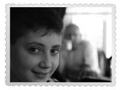

Erim
Erim Sunlu, Kara Oklar Çetesi’nin lideri. Bu kitabın yazıldığından haberdar değil. Kız kardeşim Sanem’in oğlu. Gözleri gerçekten masmavidir; bunu Simin, “Erim’in gözleri çakmak çakmak” diyerek anlatır. Az ve öz konuşur. Çok sağlam karakterlidir. Yakışıklılıkta Harry Potter’a beş basar.

Beraber gittiğimiz her yerde, “Biz böyle efendi bir delikanlı görmedik!” derler. İzmir Karşıyaka’da yaşıyor. Dayısını çok sever, dayısı da ona bayılır.